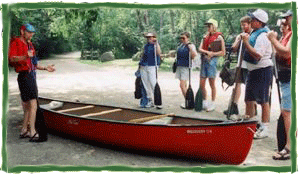

Canoe or Kayak Instruction 2013
Kayaking and canoeing are great ways to get outdoors, have fun, get some exercise, and enjoy nature. Though people are often able to just jump into a boat and make it "go", it's surprising what a difference it makes when you know how to perform a few basic strokes correctly and efficiently. Knowing about safety can also give you a peace of mind when you venture out on the water.
You may be an experienced paddler wishing to learn the latest in efficient paddling techniques or expand your skills, or you may be a novice aspiring to master control of a kayak or canoe. Either way, we'll to help you to reach your goals and to enjoy your paddling experiences. Besides exercises in paddling, you'll enjoy the lovely locations of our classes. And since our instructors are also naturalists, you may also learn a bit about the nature around you, no extra charge!
TO REGISTER for tours, please complete the Tour & Instruction Registration/ Liability Release Form and mail with payment to:
Nashoba Paddler, LLC
PO Box 228
West Groton, MA 01472
* Students receive a 20% discount on additional rentals during the current season.

Paddling Clinics
Our introductory clinics have been set up such that they can be taken in two parts, allowing flexibility and time to practice between lessons if desired. This also allows you to take advantage of our discounted rentals for clinic participants. Our experienced instructors are certified by the American Canoe Association. Clinics have a ratio of 6 participants to 1 instructor with a minimum of 4 participants. Prices include the use of our boats, paddles, and personal flotation devices but you may certainly use your own equipment if you prefer. (If fewer than 4 participants register, you will have the option to take a private or semi-private lesson for an additional charge.)
BEGINNER CLINICS* (LEVEL 1- Part 1)
Discover the fun and adventure of kayaking or canoeing! This 3-hour clinic is geared for people who have had limited or no training in paddling. Emphasis will be on basic safety and basic paddling skills that will allow you to safely and effectively maneuver on flat-water. While designed as a stand-alone, introductory course, students often choose to continue with a Skills Clinic to refine their paddling skills through significantly more guided, on-water practice time.
SKILLS CLINICS* (LEVEL 1- Part 2)
This 3-hour clinic is for paddlers who have already taken beginner lessons in the past, or who have been paddling on their own and want to brush up on their flat-water paddling skills. Our instructors can help you to refine your technique and improve paddling efficiency.
Private/Semi-Private Lessons
There's nothing like learning one-on-one with an American Canoe Association certified instructor. This lesson will open up new possibilities for you! Call us to set up an appointment.
QUICKSTART YOUR KAYAK or CANOE * (LEVEL 1)
The ACA Quickstart Your Kayak or Quickstart Your Canoe courses are designed as a brief introduction to kayaking or canoeing on flat-water. A 3-hour course taught on flat-water.
Available as a Private or Semi-private lesson. Call for pricing and to schedule.
INTRODUCTION TO KAYAKING or CANOEING * (LEVEL 1)
The ACA Introduction to Kayaking or Introduction to Canoeing courses emphasize the entry-level paddling skills for individuals desiring an introduction to the sport of kayaking or canoeing. A 6-hour course taught on flat-water.
Available as a Private or Semi-private lesson. Call for pricing and to schedule.
ESSENTIALS OF RIVER CANOEING* (LEVEL 2)
The ACA Essentials of River Canoeing course is designed as an introduction to paddling rivers safely. Participants learn to catch large eddies and perform simple ferries, recognize and avoid hazards, perform rescues and respond to emergencies on moving water rivers with no rapids. A one-day course taught on moving water with no rapids.
Available as a Private or Semi-private lesson. Call for pricing and to schedule.
RIVER CANOEING* (LEVEL 3)
This course is for canoeists interested in learning the skills required to play on rivers with Class I rapids by catching smaller eddies, making sharp peel outs and efficient ferries. Participants at this level aspire to attain a higher level of canoeing skills, quality strokes/maneuvers, and river rescue skills. A one-day course taught on Class I rapids on sections of rivers rated up to Class I-II.
Available as a Private or Semi-private lesson. Call for pricing and to schedule.
Find out more information on our instructors.

Nashoba Paddler, LLC
978-448-8699
LOCATION: 398 West Main St. (Rt. 225), Groton, Ma
MAILING ADDRESS: PO Box 228, West Groton, Ma 01472
All rights reserved, Nashoba Paddler, LLC 2013 ©